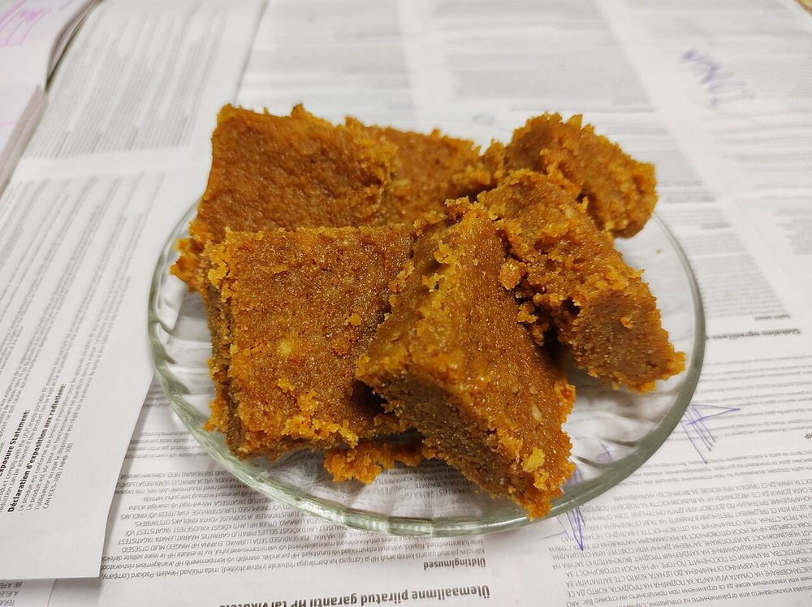
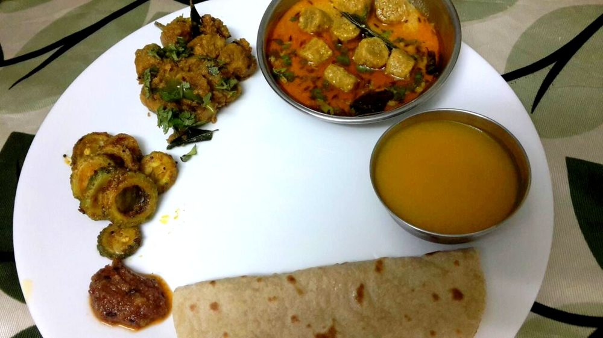
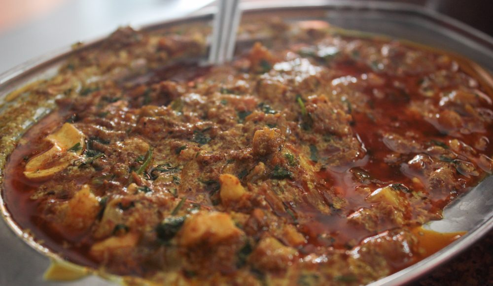
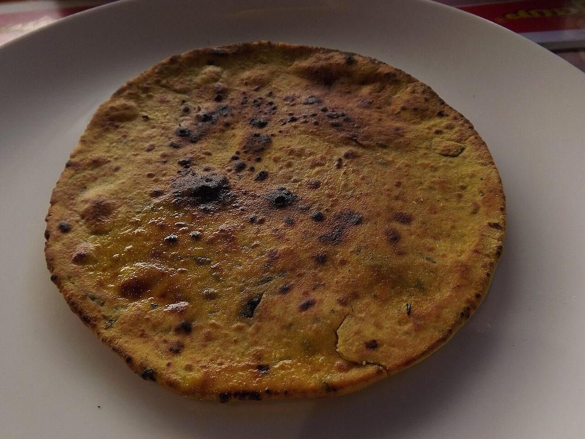
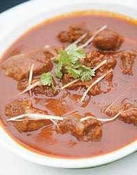
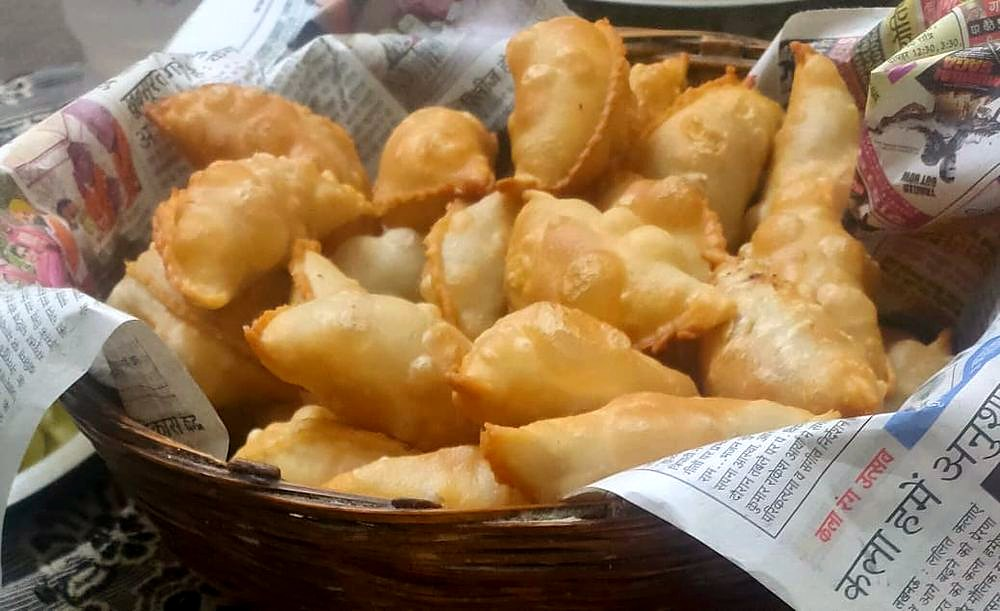
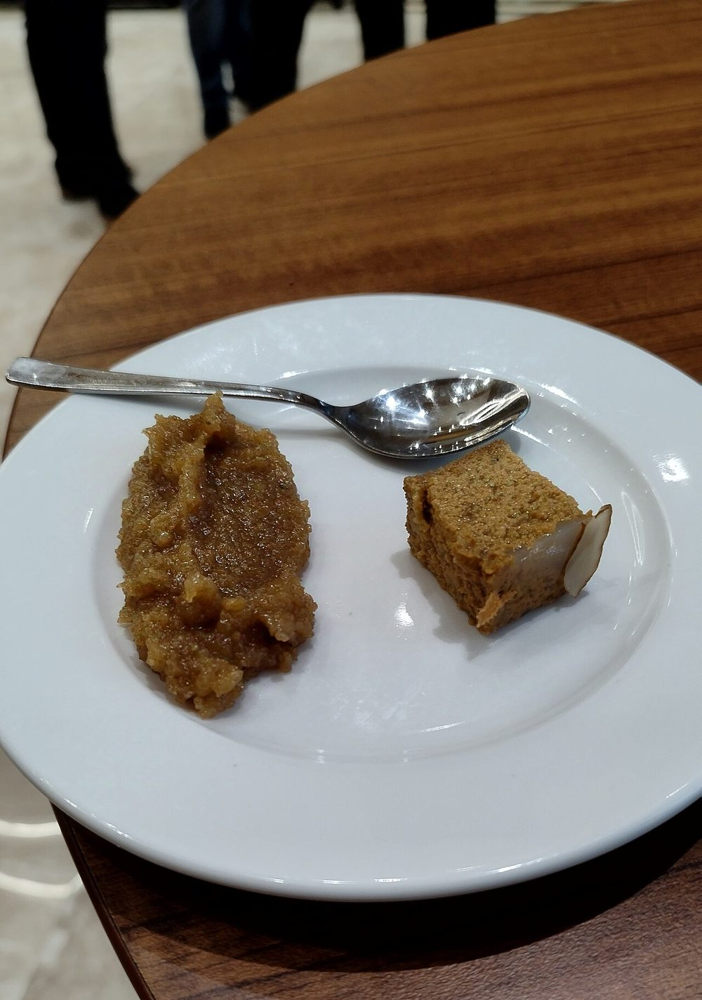
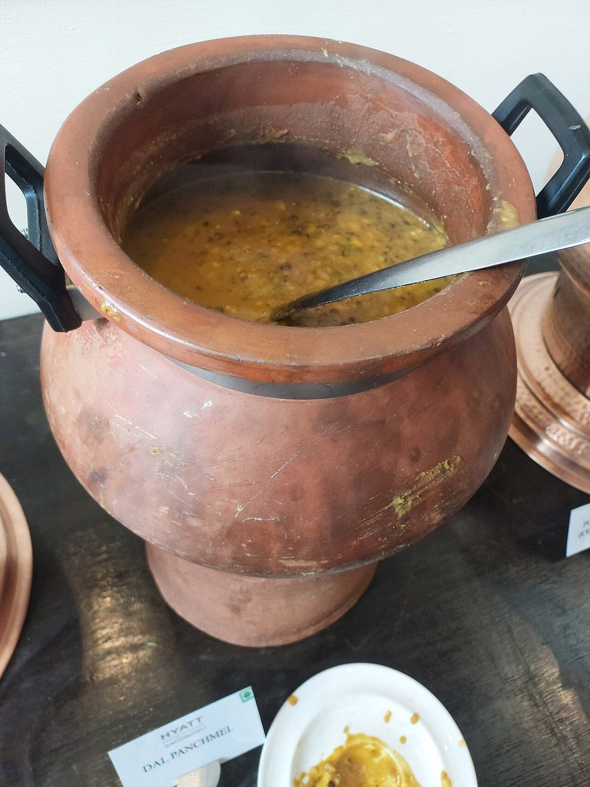
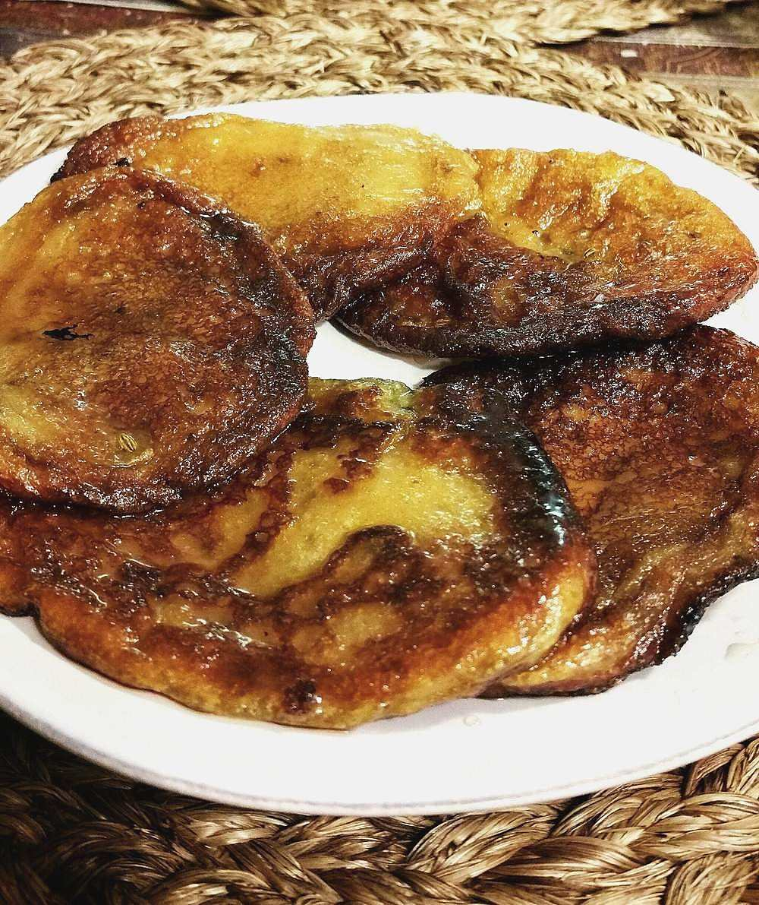

Northwest India
Rajasthani Cuisine
Cooking adapted to the desert, built around scarce water and ingredients that keep. Two very different food traditions grew up inside it.
Cooking adapted to the desert, built around scarce water and ingredients that keep. Two very different food traditions grew up inside it.
Much of Rajasthan sits within or on the edge of the Thar Desert, and the cuisine answers to that environment more directly than almost any other Indian regional tradition. Fresh vegetables were historically scarce and water was precious1. So the cooking developed around ingredients that could survive drought and long storage. These were dried lentils and beans, dried desert berries and pods such as ker and sangri (gathered from native desert shrubs and trees), buttermilk and other dairy standing in for fresh produce, and plenty of ghee to add richness where fresh ingredients couldn't.
Rajasthan's food history carries an internal split. On one side is the Rajput tradition, the warrior-noble class whose royal kitchens grew out of hunting culture and historically included game and meat. Laal maas ("red meat"), a fiery mutton curry tied to royal Rajput feasts, is the clearest surviving example. On the other side is the Marwari tradition, Rajasthan's major merchant community, historically Jain or Vaishnav Hindu, and strictly vegetarian. The Marwari community's trading networks reached across India, and they carried Rajasthani vegetarian food far beyond the state's borders, including what's now sold across the country as "Rajasthani thali."
The state's signature dish shows how the whole cuisine works. Baati are hard wheat-flour rolls, traditionally baked (originally in embers) until dense and dry. It's a bread built to last, and Rajasthan built its signature meal around it. They're served crushed into ghee alongside dal (lentils) and churma (a sweet, crumbled wheat-and-jaggery mixture). Every part of the dish is built for a hot, dry climate and for keeping without refrigeration, and that idea runs through nearly the whole cuisine.


 Aam ki Launji
Aam ki Launji
 Aloo Pyaaz ki Sabzi
Aloo Pyaaz ki Sabzi
 Bajre ki Raab
Bajre ki Raab
 Bajre ki Roti
Bajre ki Roti

Besan ki Chakki Dahi Wale Aloo
Dal Baati Churma
Dahi Wale Aloo
Dal Baati Churma
 Gatta Pulao
Gatta Pulao

Gatte ki Sabzi Govind Gatte
Govind Gatte

Haldi ki Sabzi Junglee Maas
Junglee Maas
 Ker Sangri
Ker Sangri

Khoba Roti
Laal Maas Lehsun ki Chutney
Lehsun ki Chutney
 Mangodi ki Sabzi
Mangodi ki Sabzi

Mawa Kachori Methi Bajra Puri
Methi Bajra Puri
 Mirchi Vada
Mirchi Vada

Moong Dal Halwa
Panchmel DalPyaaz Kachori
 Rajasthani Kadhi
Rajasthani Kadhi

Rajasthani Malpua Safed Maas
Safed Maas
Not cooking tonight?
Tell us what is in your kitchen, and Khaana will help you cook an authentic Indian meal.